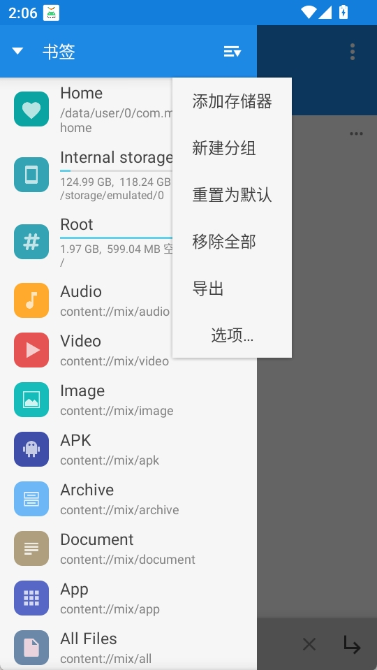
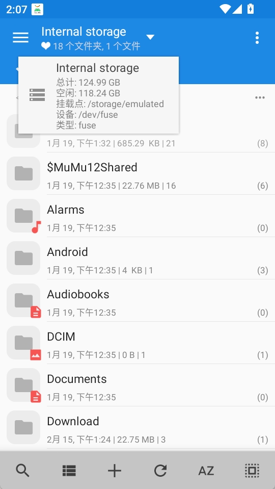

MiXplorer 完整上手指南：从零搭建你的手机文件中枢
这篇教程带你从安装到上手，一步步把 MiXplorer 变成你手机上的文件管理中枢——云盘、局域网、压缩包、PDF 一把梭。
读完这篇教程，你能在 Android 手机上用 MiXplorer 完成以下所有操作：管理本地文件、同时挂载多家云盘、通过 HTTP 服务器把文件发给电脑或朋友、直接打开 PDF 和电子书、用 WebDAV 连进你的私有云。
准备工作
平台：Android 5.0 及以上，无需 Root 即可使用全部核心功能。
版本选择：免费版和付费的 Silver 版核心功能完全一致。Silver 版只是把 Archive、PDF、VLC 解码器等插件预先打包好上架应用商店，省了手动装插件的步骤。国内用户建议免费版，直接从mixplorer官网或 XDA 开发者论坛获取即可，更新也比商店渠道更快。
第一步：安装与初始配置
安装包从下载拿，装完首次打开会弹出存储权限请求。Android 11 及以上需要授予"所有文件访问权限"才能操作内部存储和 SD 卡。这个权限授予后系统会弹窗确认，跟着走就行。
进入主界面后你会看到标准的文件管理器布局：顶部工具栏、中间文件列表、底部状态栏。左侧可以从边缘滑出侧边抽屉，那里是挂载的云盘和服务器的入口。

先别急着操作，点右上角的 ⋮ 进入设置，把几个关键项调好：
- 主题：选择你喜欢的配色，内置了 Material Design、浅色、深色等多种方案
- 显示设置：开启"显示隐藏文件"方便调试，"文件排序"按修改时间还是名称随心
- 双面板模式：如果你的屏幕够大（平板或横屏），一定要打开双面板——左边浏览、右边拖拽复制，效率翻倍

第二步：挂载你的云盘
这是 MiXplorer 最核心的能力之一。侧边抽屉拉到底，点"添加存储器"，你会看到一长串支持列表：Google Drive、OneDrive、Dropbox、Box、Yandex、Mail.ru、HiDrive、CloudMe……加上 WebDAV 和 SMB，覆盖了几乎所有主流云存储和私有云协议。
添加 Google Drive / OneDrive 这类 OAuth 云盘
点选后会跳转到系统浏览器，用你的账号授权登录就行。授权完成后自动回到 MiXplorer，云盘就出现在侧边抽屉里了。后续操作和本地文件完全一样——复制、移动、重命名、删除，MiXplorer 在后台帮你同步。
添加 WebDAV 私有云（Nextcloud / OwnCloud 等）
WebDAV 是自建私有云的通用协议，配置稍微多几个字段：
- 显示名称：随便起，比如"家-Nextcloud"
- URL：Nextcloud 填
https://你的域名/remote.php/dav，OwnCloud 旧版填https://你的域名/remote.php/webdav - 用户名和密码：这里重点注意——不要用登录密码，去私有云网页端的安全设置里生成"应用专用密码"，用那个。90% 的连接失败都是因为直接用了登录密码。
高级选项里还有超时、编码、SSL 验证可以调，想了解每个字段的详细说明可以去文档查。自建私有云用自签证书连不上时，临时关掉 SSL 验证试试。
添加 SMB 局域网 NAS
选 SMB 后会自动扫描局域网里的 NAS 和共享文件夹。扫不到的话手动填 IP、用户名、密码。连上后家里的 NAS 就在侧边抽屉里，和本地文件没区别。

第三步：用 HTTP 服务器临时分享文件
想把手机里的照片发给电脑，或者让朋友连你的 WiFi 直接下载一个文件？HTTP 服务器是最快的方式——接收方不需要装任何客户端软件，浏览器打开地址就行。
启动步骤很简单：
- 先在 MiXplorer 里浏览到你想分享的目录（比如 DCIM/Camera）
- 右上角 ⋮ → Servers → HTTP(S) Server
- 点"启动 HTTP 服务器"
- 状态栏会显示地址：
http://192.168.1.100:8080
电脑或朋友的手机和你连同一个 WiFi，在浏览器里打开那个 IP 地址加端口号，就能看到当前目录下的文件列表，点文件名直接下载。
⚠️ 这里有个新手最容易踩的坑：HTTP 服务器默认无密码，任何同网段设备都能访问。如果不小心把 MiXplorer 停在了内部存储根目录，整个手机存储都暴露在外。启动前务必确认当前浏览的目录就是你想分享的范围。设置里可以开用户名密码认证、IP 白名单，甚至启用 HTTPS（Silver 版支持），安全选项按需加。
第四步：直接打开 PDF 和电子书
装了 PDF 插件（Silver 版内置）后，MiXplorer 可以直接打开 PDF、EPub、Mobi 格式的电子书，不需要跳出 App 找专门的阅读器。
而且这个功能和云存储打通了——你在 Google Drive 或 WebDAV 上点一个 PDF，MiXplorer 在后台偷偷下载到临时目录，然后直接调起内置阅读器。退出后临时文件自动清理，本地不占空间。
阅读器功能够用：目录跳转、关键字搜索、双指缩放、夜间模式、文字选择复制都有。DRM 加密的受保护文件打不开，那种得用 Adobe Reader 或 Bluefire Reader，遇到了直接换 App 就行。
第五步：压缩包与 Root 高级操作
Archive 插件装上后，MiXplorer 可以直接浏览和解压 ZIP、7Z、RAR、TAR、GZIP 等几乎所有压缩格式，甚至支持加密压缩包（点进去会提示输入密码）。解压速度比系统自带的快不少，而且能直接在压缩包内预览文件内容。
有 Root 权限的话，MiXplorer 还能做系统级操作：浏览 /system 分区、管理预装 App、备份 APK、调整文件权限。这些功能对普通用户来说用不上，但折腾党会很喜欢。
常见卡点与解法
卡点一：Android 11 以上读不到内部存储
原因是没给"所有文件访问权限"。去系统设置 → 应用 → MiXplorer → 权限 → 找到"所有文件访问"，手动打开。这个权限不在常规的存储权限里，藏得比较深。
卡点二：WebDAV 连接一直报错
大概率是密码问题。回头检查一遍：你用的是不是应用专用密码？Nextcloud 和 OwnCloud 的登录密码不能直接用来连 WebDAV。如果密码确认没问题，再检查 URL 格式——手打容易写错，复制粘贴服务商文档里的端点最稳妥。
卡点三：PDF 文件点了没反应
没装 PDF 插件。免费版需要单独装一个叫 com.mixplorer.addon.pdf 的 APK，装完自动被 MiXplorer 识别，重启 App 就能用了。Silver 版用户跳过这步，插件已经内置。
进阶方向
基础操作跑通后，你可以继续折腾 FTP/SFTP 服务器做稳定的批量传输、用 EncFS 或 Aescrypt 加密敏感文件、配置 DLNA 把视频投到电视上。MiXplorer 的功能深度远不止日常文件管理，慢慢探索会发现越来越多省时间的小技巧。这份教程的素材在 GitHub、Gitee、GitCode 三处都有同步，国内访问哪个方便用哪个。